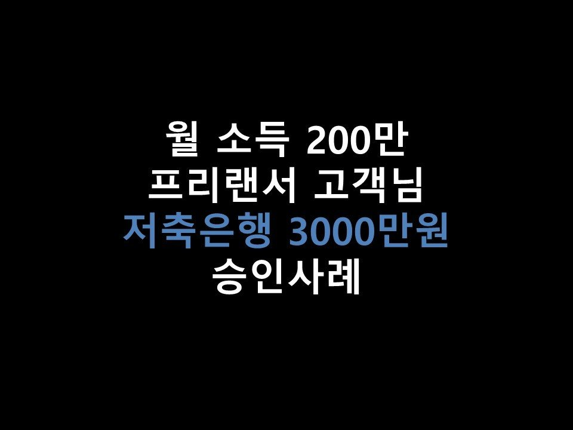
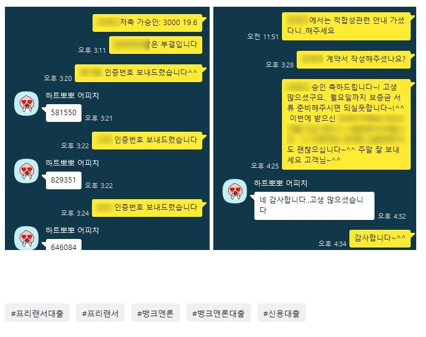

★월 소득 200만 프리랜서 고객님 저축은행 3000만원 승인사례★

안녕하세요 ~! 오늘은 프리랜서 고객님의 대출승인 사례를 소개해드리겠습니다 ^^.
고객님께서는 현재 보험사에서 프리랜서로 1년간 근무하셨으며, 월 소득은 200만원가량이셨습니다.
이용중이신 대출로는 우리은행 전세자금대출 1억 6천만원, 보증재단 1000만원, 그리고 신용점수는 KCB 815점으로
대출내역과 신용점수가 비교적 양호하신 편이었습니다~
고객님께서는 급하게 큰 자금이 필요하셔서 저희 뱅크앤론으로 문의를 주셨습니다.
프리랜서 고객님 조건으로 대출한도가 나올만한 금융사로 신용대출을 조회한 결과, O저축에서
3000만원의 한도가 나오게 되었습니다 ^^ ~ 고객님께서는 만족하며 진행을 요청해주셨습니다.
O저축으로 진행요청을 한 결과, 상담신청 다음날 전액을 온전히 승인 받으실 수있게 되셨습니다~^^
여러금융사로 쪼개지지 않고, 한 금융사에서 많은 한도가 나오게 되어 고객님께서도 흡족해하셨습니다.
아래는 저와 고객님의 대화내용중 일부입니다 ^^ 참고 부탁드립니다~!
감사합니다. (고객님과 대출을 진행하면서 통화상담을 더 많이 한지라 카톡 내용이 많지 않습니다^^;;)
